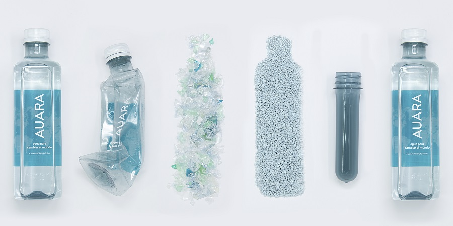
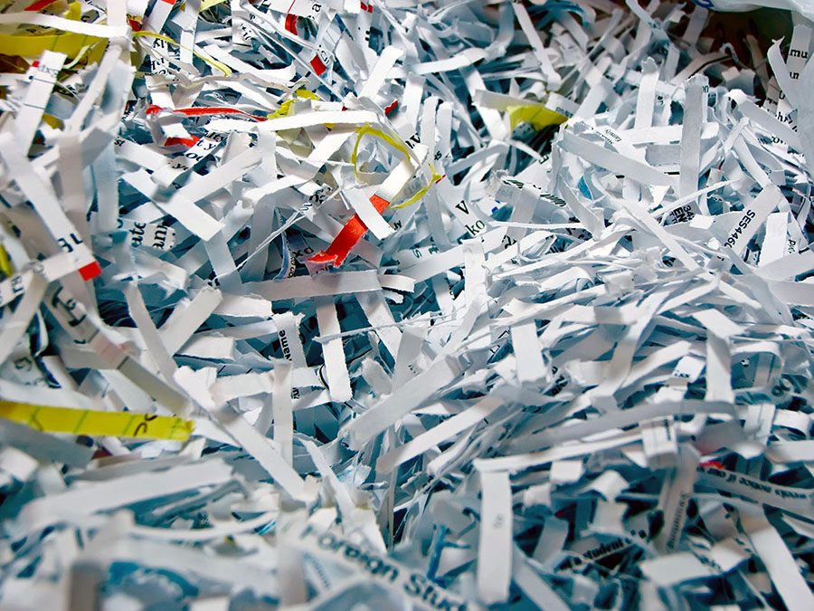

✔️ Las bombillas: no van en el contenedor verde, debemos llevarlas al punto limpio o centro de recogida.
✔️ Los espejos, ceniceros, vasos o vajillas: también deben ser reciclados en un punto limpio o de recogida.
✔️ Botar material reciclable lleno de comida.
✔️ Las servilletas y toallas húmedas contaminan el reciclaje, deben ser lanzadas a la caneca verde.
✔️ Las envolturas de alimentos tienen residuos de alimentos, por ello deben ser lanzadas a la caneca verde.
Se limpian con productos químicos, se seleccionan por tipo de plástico, y posteriormente se funden para obtener nueva materia prima, que puede moldearse de nuevo. La cantidad de productos plásticos en el mercado es enorme y por consiguiente la cantidad de residuos plásticos también es elevada.
Se consigue por papel molido, que es el que se obtiene de trozos y recortes de papel provenientes de manufacturas de papel, de papel pre-consumo o bien de papel post-consumo, que se obtiene principalmente de revistas, periódicos y todo tipo de documentos que solemos tirar.
La forma ideal para reciclar vidrio, consiste en almacenar en nuestros hogares, todo tipo de tarros, botellas o envases de vidrio, para después depositarlos en los contenedores o iglús, de color verde. Es importante tener en cuenta que deberemos retirar cualquier otro material de estos productos, como tapones, anillas, y si es posible, el papel de las etiquetas.